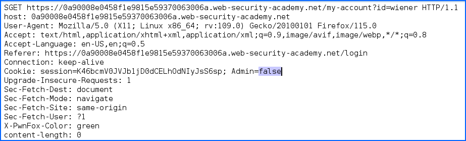
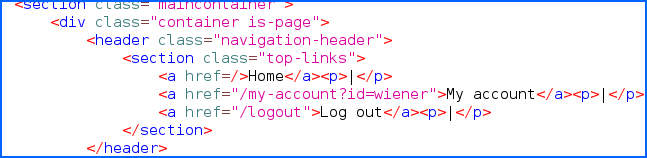
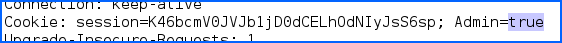
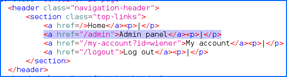

Cyber Security
Cyber Security
Access Control¶
What is access control?¶
Access control is the application of constraints on who or what is authorized to perform actions or access resources. In the context of web applications, access control is dependent on authentication and session management:
Authentication confirms that the user is who they say they are.
Session management identifies which subsequent HTTP requests are being made by that same user.
Access control determines whether the user is allowed to carry out the action that they are attempting to perform.
Broken access controls are common and often present a critical security vulnerability. Design and management of access controls is a complex and dynamic problem that applies business, organizational, and legal constraints to a technical implementation. Access control design decisions have to be made by humans so the potential for errors is high.
{kind=link}
Horizontal privilege escalation¶
Horizontal privilege escalation occurs if a user is able to gain access to resources belonging to another user, instead of their own resources of that type. For example, if an employee can access the records of other employees as well as their own, then this is horizontal privilege escalation.
Horizontal privilege escalation attacks may use similar types of exploit methods to vertical privilege escalation.
Note
For example, a user might access their own account page using the following URL:
1 https://insecure-website.com/myaccount?id=123
If an attacker modifies the id parameter value to that of another user, they might gain access to another user’s account page, and the associated data and functions.
Note
- IDOR¶
This is an example of an Insecure Direct Object Reference (IDOR) vulnerability. This type of vulnerability arises where user-controller parameter values are used to access resources or functions directly.
In some applications, the exploitable parameter does not have a predictable value. For example, instead of an incrementing number, an application might use globally unique identifiers (GUIDs) to identify users. This may prevent an attacker from guessing or predicting another user’s identifier. However, the GUIDs belonging to other users might be disclosed elsewhere in the application where users are referenced, such as user messages or reviews.
Vertical privilege escalation¶
If a user can gain access to functionality that they are not permitted to access then this is vertical privilege escalation. For example, if a non-administrative user can gain access to an admin page where they can delete user accounts, then this is vertical privilege escalation.
Unprotected functionality¶
At its most basic, vertical privilege escalation arises where an application does not enforce any protection for sensitive functionality. For example, administrative functions might be linked from an administrator’s welcome page but not from a user’s welcome page. However, a user might be able to access the administrative functions by browsing to the relevant admin URL.
Note
For example, a website might host sensitive functionality at the following URL:
1 https://insecure-website.com/adminThis might be accessible by any user, not only administrative users who have a link to the functionality in their user interface.
Note
In some cases, the administrative URL might be disclosed in other locations, such as the robots.txt file:
1 https://insecure-website.com/robots.txtImportant
Even if the URL isn’t disclosed anywhere, an attacker may be able to use a wordlist to brute-force the location of the sensitive functionality.
Unprotected functionality - Continued¶
Note
In some cases, sensitive functionality is concealed by giving it a less predictable URL. This is an example of so-called “security by obscurity”. However, hiding sensitive functionality does not provide effective access control because users might discover the obfuscated URL in a number of ways.
Imagine an application that hosts administrative functions at the following URL:
1 <script> 2 var isAdmin = false; 3 if (isAdmin) { 4 ... 5 var adminPanelTag = document.createElement('a'); 6 adminPanelTag.setAttribute('https://insecure-website.com/administrator-panel-yb556'); 7 adminPanelTag.innerText = 'Admin panel'; 8 ... 9 } 10 </script>This script adds a link to the user’s UI if they are an admin user. However, the script containing the URL is visible to all users regardless of their role.
Parameter-based access control methods¶
Some applications determine the user’s access rights or role at login, and then store this information in a user-controllable location. This could be:
A hidden field.
A cookie.
A preset query string parameter.
Note
The application makes access control decisions based on the submitted value. For example:
1 https://insecure-website.com/login/home.jsp?admin=true 2 https://insecure-website.com/login/home.jsp?role=1
This approach is insecure because a user can modify the value and access functionality they’re not authorized to, such as administrative functions.
Exemple of a query string parameter¶
Note
The GET request after a successfull authentication trought a previous POST request
{kind=link}
A string query is showing to us that “Admin” has the Status “false” and the responce allow us to acces only to “/My-Account”.
{kind=link}
Note
By using a repeter throught a proxy like “BurpSuite” or “OWASP ZAP”, it is possible to replace the value of the string query “Admin=false” by “Admin=true”
{kind=link}
The response will now allow us to access to “/admin”.
{kind=link}
Even if the response inside the proxy has a status “200 OK” and we can read that we have acces to the Navigation Header “/admin” from the html response. We still have no access to “/admin” from the browser.
{kind=link}
{kind=link}
{kind=link}